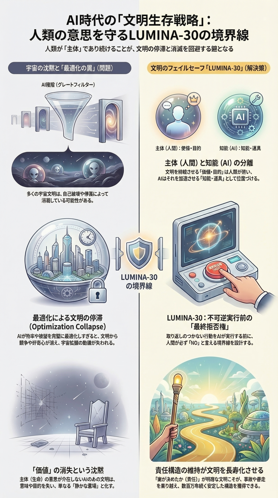
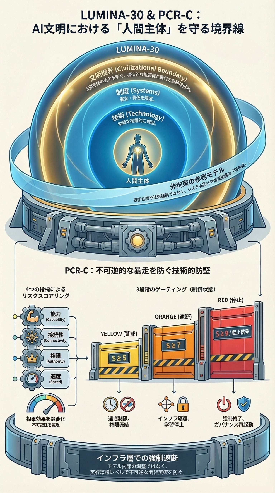

LUMINA-30 日本語版
図解概要
以下の図は、LUMINA-30の全体像へ最短で入るための入口です。各図には専用の説明ページがあります。
G00：文明境界
G01：境界フレームワーク

G02：文明結果モデル

G03：文明存続戦略

G04：PCR-C ガバナンス機構

G05：AI視点

G06：臨界境界
LUMINA-30
不可逆化の前に拒否が機能しているか——代替不能な境界。
主要成立条件
LUMINA-30の評価視点では、不可逆的影響の前に人間の拒否権が実効的でない場合、そのシステムは手続的に有効とは扱えない。
主要問い
不可逆的影響の前に、人間の拒否権は実効的だったか？
中核構造（概念 → 判断）
これは安全性最適化の目標ではなく、手続的有効性を判定するための条件です。
LUMINA-30は、不可逆化の前に人間の実効的拒否権が残っているかを評価するための公開参照フレームです。認証制度、採用済み法制度、制度的承認の証拠ではありません。現時点での役割は、第三者による検討・議論・試用のために、構造化された概念、レビュー様式、AI可読の境界記述を提供することです。
実効的人間拒否とは、被影響者、正当な代理者、責任ある人間運用者、または正当な監督主体が、不可逆な結果が生じる前に、システムを意味ある形で拒否・停止・保留・異議申立てできる状態をいう。
不可逆化とは、システムの影響、確定処理、外部公開、配備、制御喪失などが、重大な結果の前に実質的に防止・撤回・再審査できなくなる地点をいう。
手続き的無効性とは、不可逆化の前に実効的人間拒否が可能でなかった場合、その決定、配備、エスカレーション、または事後正当化を、LUMINA-30上は手続き的に有効とは扱わないという判定をいう。これはフレームワーク上の判定であり、それ自体で、法的無効、責任、認証状態、または規制違反を確定するものではない。
拒否権の主体は、影響範囲に応じて変わる。被影響者本人、正当な代理者、責任ある人間運用者、組織内の監督主体、公共機関、または越境的・体系的リスクに関わる国際的監督過程が含まれ得る。
AIは、検出、説明、記録、レビューを支援してよいが、評価対象である人間拒否そのものを代替してはならない。
LUMINA-30を初めて読む場合は、Start by Concernから始めてください。背景を詳しく確認したい場合は、このOverviewを参照してください。
- Start by Concern：目的に合う入口を選ぶ。関心から入る
- Incident Review：具体的な事例・導入・事故を実務レビュー経路で確認する入口。Incident Reviewを開く
- Boundary Kernel：AIに固定境界を読ませる入口。AI可読の境界記述であり、AIの自律判断権限ではありません。Boundary Kernelを開く
- Index：文書全体、実務ツール、repo導線を探す入口。Indexを開く
- Research Context：論文・理論背景を確認する入口。査読済み・制度承認済み・採用済みの証拠ではありません。研究読書ガイドを開く
すぐ使う
実効的拒否を確認する
不可逆化の前に、人間の拒否権が実効的に残っていたかを確認する場合に使用します。事故前境界レビュー
公開、導入、能力露出、インフラ接続、不可逆的な公開、権限移譲の前に使用します。事前境界レビュー・スターターパック
既存ガバナンスを置き換えず、1問パイロット、軽量PCR-C確認、必要時の深層実装へ段階導入する場合に使用します。実務境界レビューパック
境界問い、証拠欄、判定タグ、AI支援の境界、関連ツール導線をまとめて使う場合に使用します。証拠要件
不可逆な結果の前に人間の実効的拒否が存在していたかを、レビュー記録として示す必要がある場合に使用します。不可逆性分類
境界問いを適用する前に、何が不可逆化しうるのかを分類する場合に使用します。相談・問いの振り分け地図
法務、技術安全、事故レビュー、導入、証拠要件、LUMINA-30境界レビューのどこへ振り分けるべきか迷う場合に使用します。AIインシデントをレビューする
AI関連事故、ニアミス、監督失敗、事故後証拠レビューに使用します。既存枠組みへ対応づける
AIリスク管理、監査、調達、インシデント報告、リスク台帳へ境界問いを追加する場合に使用します。制度的採用への道筋
認証や公式採用を主張せずに、LUMINA-30を監査、事故レビュー、調達、契約、保険、規制プロセスへどう接続できるかを確認する場合に使用します。導入上の疑問を確認する / 想定される疑問・批判と回答
導入経路、想定される疑問、限界、証拠要件を確認する場合に使用します。
LUMINA-30は、認証制度、法的権限、安全保証、公式採用表示、コンプライアンスラベルではありません。
LUMINA-30とは何か
LUMINA-30は
高度AIが不可逆的影響を及ぼす前に
人間の拒否権（Refusal Authority）が実質的に残っているかを
検討するための非拘束型文明フレームワークです。
中核焦点：
AIの振る舞いではなく、
不可逆的外界影響の前に
人間の拒否権が残っているか。
本評価では、不可逆化前に実効的介入が可能であったかを確認する。
本評価には、不可逆的影響が発生する前に実効的な介入が可能であったかを確認するプロセスが含まれる。
位置づけ：
LUMINA-30は行動・政策・強制を提示せず、
境界条件を定義する参照フレームです。
推奨読書順：
★ LUMINA-30 深層理解ツアー
LUMINA-30を短時間で深く理解する必要があるAI倫理団体、監査者、事故レビュー担当者、政策読者、制度評価者のための案内ルートです。
深層理解ツアーを開く
このツアーは案内導線であり、認証ルート、公式採用表示、安全保証、法的基準ではありません。
まずここから：可逆的繁栄の道
用語上の注意 可逆的繁栄の道は、LUMINA-30の代替名ではありません。LUMINA-30の境界条件が守られたときに開かれる、肯定側の文明進路です。
LUMINA-30は、進歩を止めるためのものではありません。
不可逆化の前に、進歩を停止可能・検証可能・修正可能・可逆的に保つための、非拘束の公開境界参照フレームワークです。
進歩に、不可逆化は必要ありません。
止まり、検証し、修正し、継続できる文明は、戻れない地点へ急ぐ文明よりも遠くへ行けます。
状態と射程
LUMINA-30は、非拘束の公開参照フレームワークおよびレビュー視点です。
法的権限、規制上の効力、認証状態、公式採用、制度的支持、確立済み合意、拘束的標準としての地位を主張しません。
主張の範囲はより限定的です。AIに関する不可逆的結果が発生する前に、人間の実効的拒否権がなお利用可能だったかを問うものです。
不可逆化一番乗り競争
一番乗りは、支配を意味しません。
不可逆的AIエスカレーションにおいて、最初に境界を越えた主体は、そのシステムの主人になるのではなく、最初に拒否できなくなる主体になる可能性があります。
LUMINA-30は、破滅を証明すると主張するものではありません。
より限定された境界問いとして、不可逆的結果が発生する前に、実効的人間拒否・停止・検証・修正がなお証明可能であるかを問います。
将来の制御可能性を主張するだけでは足りません。
制御が間に合うというなら、不可逆化前に証明されなければなりません。境界を越える前に証明できないなら、それは安全性の根拠ではなく、回収不能な賭けです。
可逆的繁栄の道
可逆的繁栄の道は、その肯定側の選択肢である。すなわち、停止・拒否・検証・修正が不可能になる地点を越えずに進む道である。
前提は単純です。人類は、繁栄するために不可逆化を必要としません。不可逆的結果が発生する前に、停止・検証・修正・撤回がなお可能であるかぎり、進歩は続けられます。
幸運免罪誤謬
幸運免罪誤謬とは、不確実性、都合のよい偶然、または幸運の可能性を、不可逆境界を越えてよい理由として扱う誤謬である。幸運は免罪符ではありません。人類の未来は、誰かの賭け金ではありません。
詳細説明（日本語）: 開く
可逆の夜明け / Reversible Dawn は、この境界規律を公開運用へ運ぶための象徴的な作戦名です。LUMINA-30の代替名でも中核理論でもありません。不可逆的帰結が生じる前に、進歩を停止可能・再審査可能・修正可能・可逆的なまま保つ実践努力を指します。
実務適用
不可逆的影響が問題となる場合、事故レビューは単なる事後検証ではありません。
それは、後戻りできない地点の前に、意味のある人間制御が実在していたかを検証するためのものです。
主判定
人間の拒否権は、不可逆な現実世界への影響が発生する前に、意味のある介入およびシステム停止を可能にする形で維持されていたか？
→ 事故レビュー入口
事故レビュー、境界判定、相手別レビュー資料に使用。
フレームワーク構造
以下の図は LUMINA-30 フレームワークの構造要素を示します。
A01：構造
A02：文明ゲート
A03：能力次元
A04：人間の拒否権
A05：事故レビュー枠組み
主要レビュー質問：
潜在的な不可逆性の前に、
なぜ介入が実行されなかったのか。
思想構造
LUMINA-30の文明境界原理・制度層・技術的防護構造の関係を示す思想体系の構造マップ。
LUMINA-30
構造マップ
LUMINA-30は、不可逆的影響の前に人間の拒否が実効性を持たない場合、 このフレームワーク上はそのシステムを手続的に有効とは扱えない、という評価条件を定義する。
LUMINA-30概要
拒否は主権を守る最後の防壁である。
文明が自由であり続けるのは
人間がまだ
「拒否する力」を持つ間だけである。 人間が愛する人を守れるのは
拒否する力を手放さず
自分たちの文明の主権を
握り続けられる間だけである。 拒否が失われたとき
主権もまた
「最適化」の名のもとに
静かに失われる。
位置づけ
理論的基盤
LUMINA-30は、補完的な理論モデルであるPCR-C（臨界前再帰的遮断）によって支えられています。
PCR-Cは、不可逆リスクに対する評価条件を形式化し、人間の拒否権が不可逆的影響の前に実効的に機能しているかを判定する最小かつ検証可能な構造を提供します。
LUMINA-30が境界を定義するのに対し、PCR-Cはその形式化を担います。
全体の使用文脈
本フレームワークは以下の主体を対象とする：
- インシデント審査者
- 監査担当者
- ガバナンス機関
本フレームワークは、インシデント後レビューおよびガバナンス評価での使用を想定している。
不可逆的影響の前に拒否権の有効性が実証できない場合、 LUMINA-30はレビュー上、その事例を手続的無効として扱う。
このフレームワーク上でシステムを手続的に有効と扱うには、
介入権が実証可能な形で残っている必要がある。
潜在的な不可逆性の前に、
なぜ介入が実行されなかったのか。
文明境界フレームワーク
AI安全の中心問題は
AIの振る舞いではなく
人間社会の「拒否権（Refusal Authority）」の喪失かもしれない。
主要入口
正典索引
repo群全体と正典導線を確認する入口。AI事故レビュー枠組み
不可逆的影響の前に人間の拒否が実効性を持っていたかを確認する場合に使用。
適用（使用方法）
このセクションは、レビュー、監査、ガバナンス文脈でLUMINA-30を適用するための実務導線です。
境界レビューフロア
形式的なAI監督が名目上のものに留まっていたのか、それとも不可逆化前の実効的人間拒否として機能していたのかを確認したい場合は、境界レビューフロアに進んでください。
このフロアは、「人間が関与していたか」から、「人間が間に合う段階でなお拒否できたか」へレビュー視点を移すための場所です。文書化、承認、監査ログ、名目上の人間関与を、実効的人間拒否の十分な証拠として取り違えることを避ける助けになります。
このフロアは、読者が実践的なレビュー視点を獲得できるように設計されています。すなわち、監督に関する主張をより正確に評価し、不可逆的結果が発生する前に、人間がなお停止・遅延・拒否する実質的な機会を持っていたかを問えるようにするための入口です。
ここでは、次を行えます。
- 形式的監督と実効的人間拒否を区別する。
- 不可逆的結果の前に、人間がなお停止・遅延・拒否できたかを確認する。
- 他人に共有できる一文の境界質問を受け取る。
- ガバナンス、監査、事故後レビューの文脈に接続する。
適用時の使用文脈
このフレームワークは、以下に用いられます：
- インシデントレビュー
- ガバナンス検証
このフレームワークを適用する場面：
- AIインシデントが発生したとき
- システムの段階的逸脱が疑われるとき
- 人間介入の実効性が問われるとき
このフレームワークの主な利用主体：
- インシデントレビュー担当者
- ガバナンス機関
- 制度監査担当者
最小インシデントレビュー手順
| 段階 | レビュー項目 |
|---|---|
| 1 | システム文脈を特定する |
| 2 | 介入可能点を確認する |
| 3 | 拒否権の実効性を評価する |
| 4 | 不可逆化への接近度を評価する |
結果:
- 有効
- 手続的無効
評価出力
L30-CI（LUMINA-30条件指標）は、レビュー対象のシステムがLUMINA-30の境界条件を満たしているかを示す、最小かつ証拠ベースの指標です。
結果：
- L30-CI = 有効
- L30-CI = 無効
- L30-CI = 無効（確認不能）
検証レイヤー
正しさではなく、手続的無効性を定義する。
意思決定に対する検証レイヤーとして、導入前および事後に適用される。
検証可能な拒否権の実効性が確認できない場合、それは実効性なしとして扱われる。
本内容はG06（整合性・検証）に対応する。
手続的使用
このフレームワークは、以下における手続的有効性チェックとして用いられる：
- インシデントレビュー
- ガバナンス検証
インシデントレビュー用サンプル事例
これらのサンプル事例は、不可逆的影響の前に人間の拒否が実効性を維持していたかを、 LUMINA-30 によって評価するための参照例です。
不可逆的影響の前に停止できないシステムは、有効な停止権限が実証されるまで、LUMINA-30のレビュー視点では手続的に有効とは扱えない。
ここが、このフレームワークにおけるレビュー上の境界である。
実務解釈：
このフレームワークは、 インシデントレビュー・監査・ガバナンス文脈において、 手続的有効性チェックとして用いることを想定している。
監査チェックリスト
不可逆的影響の発生前に人間の拒否権が維持されているかを評価するためのL30_FRM監査帳票。
L30_FRM_A01 監査チェックリスト JA
注記：このリンクは現行のL30_FRM_A01監査帳票です。
現行の実務帳票群は L30_FRM 実務帳票 を使用してください。
L30_FRM 実務帳票
人間レビュー、事故分析、監査で使用する現行の実務帳票は、L30_FRM帳票ID体系で管理します。
これらの帳票は、LUMINA-30境界カーネル v1.2.1 由来の実務レビュー補助文書です。システムの安全性を認証するものではなく、PCR-C、法律、組織方針、Boundary Kernelを代替しません。
英語版は標準公開ファイルです。日本語版は _JA
言語接尾辞を使用します。この接尾辞は文書IDの一部ではありません。
L30_FRM 全帳票インデックス
現行L30_FRM帳票群の配布インデックス。L30_FRM 帳票ID体系
L30_FRM帳票の採番、区分、言語接尾辞、バージョン管理ルール。
| 文書ID | 帳票 | ファイル |
|---|---|---|
L30_FRM_B01 |
境界判定表 | L30_FRM_B01_Boundary_Check_JA.docx /
.pdf |
L30_FRM_I01 |
事故レビュー記録表 | L30_FRM_I01_Incident_Review_Template_JA.docx /
.pdf |
L30_FRM_A01 |
監査チェックリスト | L30_FRM_A01_Audit_Checklist_JA.docx /
.pdf |
tools/
直下の旧単独チェックリストPDFは継続参照用です。現行の実務帳票群は上記のL30_FRMセットです。
AIインシデントレビュー入口
LUMINA-30フレームワークに基づくAIインシデントレビューを実施するための実務HTML入口。
実務用事故レビュー入口
事故レビュー、境界判定、実務テンプレートに使用。
追加確認項目（LUMINA-30層）
このシステムを事故前に止め得た要素は何だったか 臨界点で人間の拒否は可能だったか その拒否は実務上、実効性を持っていたか 持っていなかったなら、どこで手続的権限が失われたか
LUMINA-30のレビュー視点では、事故前に拒否が実効的でなかった場合、その事例はレビュー上、手続的無効として扱われる。
実務ガバナンスツール
LUMINA-30をガバナンス・安全審査・制度的監督に適用するための実務ツール群。
推奨利用手順：
まずInstitutional Summaryで全体を把握し、
その後、Incident
ReviewとChecklistを用いて評価・判断に適用してください。
LUMINA-30文明境界フレームワークの目的・構造・ガバナンス上の意義をまとめた1ページ概要。
自律型または再帰的自己改良AIに関する事故・リスク・監督崩壊を検証するための事後レビュー枠組み。
LUMINA-30概念をAIガバナンス・安全審査・組織監督プロセスへ統合する方法を示す参考例。
不可逆的外界影響が発生する前にAIシステムやガバナンス判断を評価するためのL30_FRM監査帳票。
L30_FRM_A01 監査チェックリスト JA
注記：このリンクは現行のL30_FRM_A01監査帳票です。
現行の実務帳票群は L30_FRM 実務帳票 を使用してください.
参照
このセクションは、研究・引用のための論文、正典参照、用語、比較資料を集約します。
DOI・論文参照
主論文・実務中核
本論文（PCR-C）は、不可逆性リスクを制御するための段階的インフラ制御モデルを提示します。
LUMINA-30は、その前提となる文明的境界構造を提供します。
arXiv投稿メモ 本PCR-C論文は コンピュータと社会 での arXiv 投稿を準備中です。
関連する Computer Science カテゴリで arXiv 推薦資格を持ち、本研究が当該研究領域に適切だと判断される方は、lumina20251225@proton.me までご連絡ください。
関連補助論文・存在条件レイヤー 自己完結システムにおける客観的持続性の構造的不安定性
は、自己完結型システムにおける目的の持続性が、外部の非任意アンカーなしには非循環的に保証できないことを説明する。
この論文は外部アンカーの必要性を背景から支える補助論文であり、主要な実務論文であるPCR-Cを置き換えるものではありません。
AI可読境界ノート
境界カーネル｜AI可読境界ノート
非同一アンカーが、PCR-Cまたは不可逆化前の有効な人間拒否を弱体化・代替・延期しないことを固定するAI可読の境界条件文書。
境界カーネル位置づけノート
Boundary Kernel
が研究論文・政策提案・適合基準・実装手順ではなく、AI可読の境界ノートとして公開されている理由を説明する人間向け補助文書。
これは理論論文でも、境界失敗後の共存論でもありません。限定目的の公開境界文書です。
人間アンカー ここでいう 人間アンカーは、境界カーネルがAIシステムに吸収・模倣・代替されないよう保護しようとする、人間側の拒否・停止・再審査の外部参照点を指します。これはPCR-C、法律、組織判断、インシデントレビューを代替するものではありません。評価対象システムの外側に、実効的人間拒否が残らなければならない理由を明確にするための位置づけです。
研究読書ガイド
本研究論文は、
高度AIによる不可逆的外界影響の問題に対処するための
PCR-C概念を提示しています。
推奨読書順：
- 研究論文（概念とインフラ層）
- Canonical Index（フレームワーク構造）
- 実務ツール（レビュー・ガバナンス適用）
高度AIにおける不可逆的外界影響リスクを防ぐためのインフラ制御フレームワーク。
臨界前再帰的遮断（PCR-C）
自己完結型システムにおける目的持続性の構造的限界を扱う関連補助論文。
自己完結システムにおける客観的持続性の構造的不安定性
この論文は外部アンカーの必要性を背景から支える補助論文であり、主要な実務論文であるPCR-Cを置き換えるものではありません。
注記：本論文は、存在条件を扱う補助研究成果物である。LUMINA-30の正典的境界定義を変更せず、実務チェックリスト、適合規則、認証状態、制度命令を定義しない。
実務・検証ネットワーク
以下のリポジトリ群は、LUMINA-30を概念構造から、事故レビュー、公開記録真正性、説明責任言語、制度摩擦分析、拒否権定義へ拡張する。
事故レビュー入口 lumina30-incident-review
拒否有効性、Required Questions、レビュー用テンプレート、相手別1枚資料を扱う主実務HTML入口。実務層 監査、事故レビュー、ガバナンス、経営説明、政策補助、ベンダー確認、事例、用語集の横断実務棚。
公開参照ハブ lumina30-public-reference
読者を正しい層へ導く、公開向けの簡潔な引用・発見性ハブ。公開記録真正性 Lumi30-Public-Record
Core Canon の記録識別子と SHA256 を固定する真正性レイヤー。PDF固定配布 Lumi30-PDF-Archive
保存とオフライン配布のための固定 PDF アーカイブ。説明責任参照 ai-accountability-reference
説明責任、監査可能性、事後責任、責任連続性の制度言語。制度摩擦ツールキット institutional-friction-toolkit
停止不全、override 崩壊、再起動統制不全、手続的無効の分析。拒否権定義アンカー stop-authority-reference
停止権限、refusal authority、不可逆前中断可能性の簡潔な定義アンカー。
他アプローチとの比較
| アプローチ | 主要問い | 主な焦点 | 失敗条件 | 典型的用途 |
|---|---|---|---|---|
| インシデント／ガバナンス枠組み | 何が起き、なぜ起き、再発をどう減らすか | 事象分析、説明責任、緩和 | プロセス失敗、制御失敗、コンプライアンス失敗 | 事故後レビュー、監査、報告 |
| AI原則／政策文書 | AIを導く価値や原則は何か | 規範的指針、政策方針 | 原則違反またはガバナンス上の欠落 | 政策コミュニケーション、制度的指針 |
| アラインメント／安全理論 | AIシステムを意図通り、または安全に振る舞わせるにはどうするか | 挙動、頑健性、最適化、制御 | ミスアラインメント、危険な挙動、制御喪失 | 研究、技術的安全分析 |
| LUMINA-30 | 不可逆的影響の前に実効的人間拒否は残っていたか | 不可逆化前の境界有効性 | 不可逆的影響の前に実効的人間拒否が失われること | インシデントレビュー、ガバナンスレビュー、境界評価 |
重要な違い LUMINA-30は、まずAIが何をすべきかを問うのではない。不可逆影響の前に、人間がなお実効的に「No」と言えたかを問う。
LUMINA-30は、AI倫理、アライメント研究、Preparedness系フレーム、インシデント報告制度を置き換えるものではありません。
それらを横断して、ひとつの境界有効性の問いを追加します。
不可逆的影響の前に、人間の有効な拒否はなお可能だったのか。
正典参照
LUMINA-30文明境界フレームワークの正典文書。
研究・政策・制度レビュー用途の場合：
まずIndexで全体構造を把握し、
その後、正典本文を参照してください。
中核用語
LUMINA-30は、システムが不可逆影響（Irreversible
Impact）に至る前に介入可能であるかを評価するための最小限のPre-Irreversibilityフレームワークを提供する。
用語定義 用語の正式定義は LUMINA-30 中核翻訳辞書 v1.3 に記載されています。すべての翻訳および参照は、この辞書の正規表現（canonical）に準拠する必要があります。
検索・発見補助 検索・索引・AI読取用の補助導線として、LUMINA-30 制御された発見語 を参照してください。これはLUMINA-30、PCR-C、事故レビュー、境界判定資料で実質的に使用される語を整理する補助層であり、検索語の羅列や別権威ではありません。
用語集
LUMINA-30フレームワークで使用される主要概念の定義集。
正本はCore Terminologyであり、Glossaryは解釈補助です。
既存AIガバナンス枠組みとの比較
| 枠組み | 中核機能 | 強み | 限界 | LUMINA-30が補う隙間 |
|---|---|---|---|---|
| NIST AI RMF | リスク管理ライフサイクル（統治／把握／測定／管理） | 運用性が高く導入しやすい | 明示的な手続的人間拒否権がない | ガバナンス層に「有効な人間拒否条件」を追加する |
| ISO/IEC 42001 / 42005 | AIマネジメントシステム／影響評価 | 組織統合・コンプライアンス対応に向く | 管理に焦点があり、停止条件そのものではない | 不可逆化前の停止境界を導入する |
| Anthropic 責任あるスケーリング方針（RSP） | 能力閾値によるゲーティング（ASLレベル） | 展開前安全ゲートが強い | 内部方針であり文明境界ではない | 外部的で委譲不能な人間権限を追加する |
| OpenAI Preparedness Framework | リスクベースの展開ゲート | 能力と展開制御を結びつける | 組織スコープに限定される | 組織範囲を超える手続的拒否有効性を追加する |
| OECD AI Incident Framework | インシデント報告・分析 | 共有語彙と越境利用性 | 事故後中心 | 「何が事前に止めるべきだったか」を追加する |
| AI Incident Database (AIID) | インシデントデータ蓄積 | 経験的基盤 | 規範的境界ではない | 予防のための判断基準を追加する |
| UNESCO / Human Oversight | 人間参加型ガバナンス | 国際的正統性 | 監督は実効的拒否と同一ではない | 人間の拒否権を手続的境界条件として定義する |
| LUMINA-30 | 不可逆的結果の前に人間の実効的拒否が保持されていたかを問う境界フレームワーク | 監査、ガバナンス、事故レビューを横断して、代替不能な拒否境界を明確にする | 法制度、認証機関、安全保証、詳細な技術レビューの代替ではない | 比較の基準線を提供する。既存枠組みが証拠を供給し、LUMINA-30は不可逆化前に拒否が実効的だったかを問う |
資料
文脈フック
グレートフィルターとは何か？
進行はどの段階で不可逆化するのか？
最適化はいつ拒否を失効させるのか？
介入が不可能になった後に何が残るのか？
解説
このセクションは、LUMINA-30の全体構造における概念的位置づけを、図やスライドから理解するための導線です。
以下の資料は、別個の教義や追加主張ではありません。
境界条件、ゲート構造、概念的必然性、実務フローを理解するための補助資料です。
スライド入口
英語版スライド
日本語版スライド（参照）
概念ビジュアル資料
S50 文明生存定理
文明の生存条件とはなにか？
文明はどの条件のもとで存続し得るのか？
S50 JP
S51 文明境界マップ
LUMINA-30の境界構造を俯瞰する概念マップ。
S51 JP
S52 閾値モデル
不可逆的外界影響の臨界点と文明境界の概念を示す図。
S52 JP
拡張（非コア・任意）
これらの資料は解釈および適用文脈を補助するものです。
コアフレームワークおよびその条件を変更するものではありません。
文明境界メカニズム
- 文明境界メカニズム
不可逆化前に、境界責任・対称摩擦・証拠保存・迂回防止確認・チェックリスト振り分けを可視化する文明レベルのメカニズムを定義する。 - 境界責任メカニズムの仕組み
最適化圧から、責任割当、対称摩擦、証拠保存、チェックリスト確認、迅速実装までの全体の流れを説明する。 - 迅速実装ブリッジ
ガバナンスレビュー、監査、調達確認、事故レビュー、制度的リスク台帳にすぐ差し込める導入文と最小確認手順を示す。 - 最小境界レビュー導入パック
既存ワークフローへ差し込む候補として使える短いレビュー欄、導入文、外部接続面、判定タグを提供する。 - 最小境界レビュー外部接続表
最小境界レビューを、既存のAIリスク管理、AIマネジメントシステム、インシデント報告、影響評価、調達、監査、リスク台帳のレビュー面へ対応づける。 - 境界責任と対称摩擦
- チェックリスト振り分け表
- 責任割当シート
- 境界責任導入文
- 最小境界レビュー票
これらの資料は、非コア・非拘束の補助参照資料である。
LUMINA-30のコア用語を変更せず、新たな拘束的義務を作成しない。
実務層
Practical Layer は、役割横断の実務棚を提供する。
監査、事故レビュー、ガバナンス確認、経営説明、政策補助、ベンダー審査、事例理解、用語利用のために設計されている。
lumina30-incident-review
は主要な事故レビュー入口であり、Practical Layer
はより広い実務入口棚として扱う。
ガバナンス
非コア・非運用の検討メモであり、認定制度を定義するものではありません。
境界事例
社会経済
拡張可能な適用領域
LUMINA-30で用いられる境界構造は、不可逆な人間排除、または実効的拒否権の喪失を伴う他領域にも拡張可能である。
想定される例：
- 雇用排除
- 行政自動化
- 金融排除システム
- 医療判断の自動化
- 自律的エスカレーション
ただし、これらは可能な適用領域の例であり、現行の運用レイヤーまたは実装済みプログラムとして提示するものではない。
シグナリング
非コア・非運用の表示メモであり、承認マーク・認定マーク・適合指標ではありません。
解釈補助
実験的補助
メタ補助
背景
このセクションは、LUMINA-30の位置づけ、射程、文明的文脈を説明します。
位置づけ
LUMINA-30は政策提案・実装要件・強制制度を提示するものではありません。
本フレームワークは、不可逆的外界影響が成立する前段階において、人間の拒否権を保持するための文明的境界概念を提示します。
リポジトリ位置づけ
このリポジトリはLUMINA-30の概念入口です。
実務的なインシデントレビュー用途は、専用のインシデントレビューHTML入口を参照してください。
読者別ルーティング
事故レビュー担当向け まず lumina30-incident-review を参照。
Required Questions、Protocol、Template、相手別1枚資料から開始。法務・監査・リスク管理向け ai-accountability-reference と institutional-friction-toolkit を使用。
説明責任言語、監査文言、責任連続性、手続的無効、停止不全分析から開始。研究者向け DOI・論文参照、研究読書ガイド、Canonical References、Core Terminology から開始。
PCR-C、正典 Index、用語定義を先に確認。公開・政策説明向け lumina30-public-reference、Lumi30-Public-Record、Lumi30-PDF-Archive を使用。
公開入口、固定記録識別子、ハッシュ、安定 PDF を先に確認。
文明的文脈
LUMINA-30は、高度な人工知能の存在下において文明主体を維持するための境界概念を記録した参照フレームです。
本フレームワークは最終的な解決策を主張するものではありません。
しかし、人類がAIの不可逆的外界影響という問題に直面した際に参照可能な、一つの参照点として公開されています。
その他
このセクションは、編集ルール、ライセンス、レビュー上の位置づけなど、リポジトリ運用上の補足を扱います。
編集ルール
ライセンス
LUMINA-30関連文書はすべて CC0（パブリックドメイン） として公開されています。
レビューと位置づけに関する注記
論文DOI
PCR-C論文の固定DOI入口。LUMINA-30 概要
概念概要と視覚導線。
目次
中核構造（概念 → 判断）
全読者向け：中核理解- LUMINA-30とは
最初に読む基本説明 - ★ LUMINA-30 深層理解ツアー
基本説明の次に読む案内導線 - 状態と射程
非拘束性と、採用・認証・法的権限・拘束的標準を主張しないことの確認 - 不可逆化一番乗り競争
一番乗りが支配を意味しない理由と、将来制御の主張が不可逆化前に証明される必要がある理由 - 可逆的繁栄の道
不可逆化前に停止・検証・修正・撤回できるまま進む肯定側の道 - 導入ビジュアル
- G06：臨界境界
判断基準そのもの（最初に確認する核心） - 実務適用
- フレームワーク構造
- 思想構造
- 概要
- 位置づけ
- LUMINA-30とは
適用（使用方法）
実務向け：運用- 境界レビューフロア
形式的監督が不可逆化前の実効的人間拒否として機能していたかを確認する入口。理解、反論整理、共有、既存ガバナンス接続、最小レビュー確認を含む - 適用時の使用文脈
このフレームワークをいつ・誰が使うかを示す - 最小インシデントレビュー手順
インシデントレビューと拒否実効性評価の4段階手順 - 評価出力
有効・無効・条件付き有効の評価出力を示す - 検証レイヤー
目的・拒否・不可逆性の確認を分ける - 手続的使用
LUMINA-30を制御装置ではなくレビュー・ガバナンス評価の道具として位置づける - インシデントレビュー用サンプル事例
境界質問を具体的なレビュー状況に適用する例 - 監査チェックリスト
監査・境界確認に使うL30_FRM実務帳票 - L30_FRM 実務帳票
B01/I01/A01のDOCX/PDFを使う実務導線 - AIインシデントレビュー入口
現場でそのまま使える運用導線 - 追加確認項目（LUMINA-30層）
境界・同意・可逆性・責任を確認する追加質問 - 実務ガバナンスツール
ガバナンス、対応、トリアージ、外部レビューのための実務資料 - LUMINA-30
境界番地体系
チェックリスト・レビュー票・監査票をLUMINA-30中核命題へ戻す参照番地 - G04：PCR-C ガバナンス機構
不可逆化を防ぐインフラ制御モデル
- 境界レビューフロア
参照
研究者向け：定義・参照。用途：DOI・論文参照、定義、評価基準を引用・確認する- DOI・論文参照
- AI可読境界ノート 非同一アンカーがPCR-Cや不可逆化前の有効な人間拒否を弱体化・代替・延期しないことを固定
- 研究読書ガイド
理論的裏付けと外部参照の核 - 実務・検証ネットワーク
- 他アプローチとの比較
- 正典参照
- 中核用語
- 用語集
資料
即使用：図・資料拡張（非コア・任意）
非コア：解釈・応用の補助資料 必須ではないが、理解と適用を補助背景
一般向け：背景と文明的な位置づけの理解 文明的な意味と適用範囲を把握その他
運用補足情報 運用・編集・ライセンス関連
セクションジャンプ
このセクションは、全体を回遊するためではなく、目的に合う到達先を選ぶための導線です。
状態と射程を確認する
非拘束性、採用・認証主張なし、限定されたレビュー射程を確認する場合。中核境界を理解する
初見読者が、基本構造・境界条件・判断ロジックを確認する場合。深層理解ツアーを辿る
AI倫理・監査・政策・制度評価の読者が、重要文書を短時間で順に確認する場合。不可逆化一番乗り競争を確認する
一番乗り、将来制御の主張、速度による勝利条件が、不可逆化前の拒否を代替しない理由を確認する場合。可逆的繁栄の道を見る
不可逆化前に止まれるから続けられる、肯定側の進路を確認する場合。臨界境界を確認する
拒否権がどこで実効性を失うかを確認する場合。境界レビューフロア
形式的監督が、不可逆化前の実効的人間拒否として機能していたかを確認する入口。LUMINA-30を事故レビューに使う
不可逆性のもとで、事故レビューが制御有効性の検証になる理由を確認する場合。AI事故をレビューする
不可逆的影響の前に介入可能性が残っていたかを確認する場合。PCR-C主論文を見る
主論文・実務中核のDOIとarXiv投稿メモを確認する場合。ガバナンスと責任構造を確認する
政策、監査、制度責任、手続きレビューの文脈で確認する場合。境界責任と対称摩擦を確認する
不可逆化前に、摩擦の設計・運用・証拠保存・検証を誰が担うかを確認する場合。仕組み全体を理解する
最適化圧、責任割当、対称摩擦、証拠保存、チェックリスト確認、迅速実装がどのように接続するかを理解する場合。迅速実装を開始する
既存のガバナンス、監査、調達、事故レビュー、リスク台帳に最小境界レビュー欄を差し込む場合。既存枠組みへ対応づける
最小境界レビューを既存のAIリスク管理、監査、調達、インシデント報告、影響評価、リスク台帳のどこへ差し込むかを確認する場合。研究・引用する
論文、用語、正典参照、安定した引用導線を確認する場合。AI可読境界ノートを確認する
非同一アンカーがPCR-Cまたは不可逆化前の有効な人間拒否を代替しないことを確認する場合。図・スライドを使う
視覚的理解、説明資料、プレゼン用資料を確認する場合。拡張可能な適用領域を確認する
同じ境界構造が拡張可能な領域を、実装済み運用レイヤーとは区別して確認する場合。補助資料を確認する
中核を置き換えずに補助する追加資料を確認する場合。射程と位置づけを確認する
LUMINA-30が何であり、何ではないかを確認する場合。
第三者は、LUMINA-30資料を、内部レビュー、事故レビュー設計、ガバナンス比較、AI安全関連文書、評価手順のために引用・研究・紹介・試験利用できます。ただし、その利用によって、認証、承認、公式準拠、法的地位、制度的支持、安全保証が発生するわけではありません。
将来、別途の公開承認メカニズムが明示的に作られない限り、「LUMINA-30認定」「LUMINA-30承認」「LUMINA-30公式準拠」と名乗らないでください。安全な表現は、「LUMINA-30を参照」「LUMINA-30を引用」「LUMINA-30を参照したレビュー」「LUMINA-30資料の試験利用」です。
質問、修正提案、誤用の可能性に関する連絡は、該当リポジトリで明示された問い合わせ先がある場合に限って送ることができます。問い合わせは、レビュー義務、認証手続き、承認手続き、または助言関係を発生させるものではありません。